论文阅读-0x03
两篇论文的阅读笔记：《Rotate to Attend: Convolutional Triplet Attention Module》[code] &《GINet: Graph Interaction Network for Scene Parsing》,ECCV 2020
Rotate to Attend: Convolutional Triplet Attention Module
Introduction
-
作者提出了一种轻量且有效的注意力机制——Triplet Attetion
-
通过使用Triplet Branch结构来捕获跨维度交互（capturing cross dimension interaction）。对于输入张量，Triplet Attention通过旋转操作和残差变换建立维度间的依存关系，并以可忽略的计算开销对通道和空间信息进行编码
-
关于attention机制的使用，已经有很多具有代表性的工作，不够在这方面也只是看过SENet，在此基础上改进的工作并没有太多了解，这里列举出来，然后找时间再看看
- [x] SENet(Squeeze and Excite module)
- [x] CBAM(Convolutional Block Attention Module)
- [ ] BAM(Bottleneck Attention Module)
- [ ] -Nets(Double Attention Networks)
- [x] NL(Non-Local blocks)
- [ ] GSoP-Net(Global Second order Pooling Networks)
- [ ] GC-Net(Global Context Networks)
- [ ] CC-Net(Criss-Cross Networks)
- [ ] SPNet
-
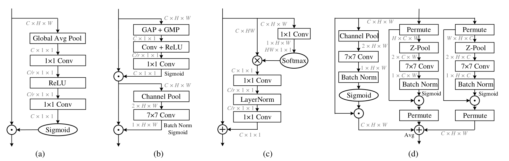
- （a）Squeeze Excitation (SE) Module
- （b）Convolutional Block Attention Module (CBAM)
- （c）Global Context (GC) Module
- （d）triplet attention
- 代表矩阵乘法， 代表对应位置元素相乘， 代表对应位置元素相加
-
不过作者说上面这些方法都存在缺陷，没有去捕获跨纬度交互信息，并且作者提出的方法几乎无参数
-
与之前的方法进行对比，有两个优点：
- 以微不足道的计算开销捕获丰富的鉴别特征表示
- 强调跨维交互的重要性而不降低维数，从而消除了通道和权值之间的间接对应关系
Triplet attention module
CBAM
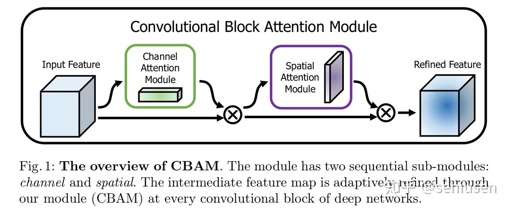
- 对于输入 ，CBAM的注意力机制先计算其通道注意力，然后再计算空间注意力，比较简单，其计算公式为
- 代表全局平均池(global average pooling，GAP)函数
- 代表全局最大值池(global max pooling，GMP)函数
- 代表sigmoid激活函数
- 和 代表两种变换，进一步转换有：
- 其中 和 代表权重矩阵，其大小定义为 和
- 这里的 r 代表降维率，r 越大的话，计算复杂度越低
- 需要注意的是 MLP: 和 的权重在CBAM中对于两个输入 和 共享
- 不过这样由于存在降维操作，会造成通道间关系的损失
Triplet Attention
- 所以作者针对CBAM中存在的缺陷，提出了一种不涉及降维操作的高效轻量（几乎无参数）的注意力机制，并且关注跨维度交互信息
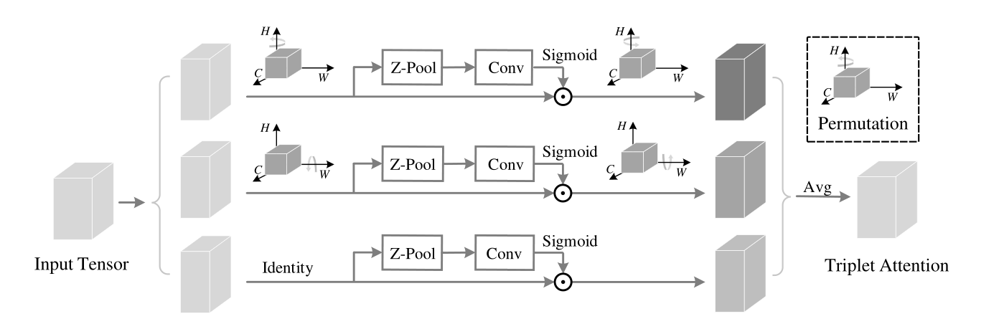
- Triplet attention由三个分支组成，给定一个输入tensor(C x H x W)
- 其中两个分支负责捕获通道 C 和空间维度 H 或 W 之间的跨维交互特征
- 将输入进入每个分支中，通过 Z-pool，然后是核大小为k×k的卷积层
- attention权值由sigmoid激活生成，然后应用于已排列好的输入张量，然后将其恢复到原始的输入形状
- 另一个分支与CBAM类似，用于构建空间的attention
- 三个分支的输出都使用简单的平均进行聚合
- 其中两个分支负责捕获通道 C 和空间维度 H 或 W 之间的跨维交互特征
- 跨纬度交互特征（Cross-Dimension Interaction）
- 作者认为一个channel池化到一个像素值，会导致空间信息的大量丢失，并且没有考虑到维度和空间之间的相互依赖关系
- 空间注意力（spatial attention）：关注维度的哪些部分
- 维度/通道注意力（channel attention）：关注哪些维度通道
- 所以作者提出的Triplet attention同时捕捉空间维度和输入张量通道维度之间的交互作用
- 作者认为一个channel池化到一个像素值，会导致空间信息的大量丢失，并且没有考虑到维度和空间之间的相互依赖关系
- Z-pool
- 将C维度的Tensor缩减到2维，将该维上的平均池化特征和最大池化特征连接起来。这使得该层能够保留实际张量的丰富表示，同时缩小其深度以使进一步的计算量更轻
-
- 0d 表示第零维：
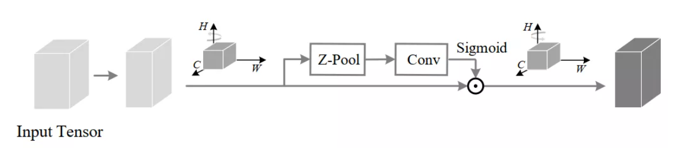
- 在H维度和C维度之间建立交互
- 输入张量 沿H轴逆时针旋转90° ，得到 （ W×H×C ）
- 经过Z-pool得到 （ 2×H×C ）
- 通过内核大小为k×k的标准卷积层，再通过批处理归一化层，得到 (1×H×C)
- 然后通过sigmoid来生成的注意力权值，在最后输出是沿着H轴进行顺时针旋转90°保持和输入的shape一致
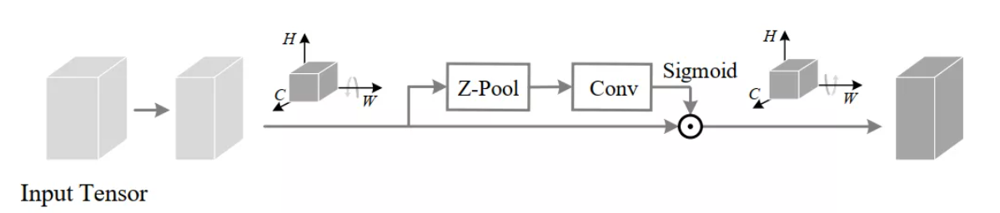
- 在H维度和W维度之间建立交互，基本同上
- 输入张量 沿W轴逆时针旋转90° ，得到 （ H×C×W ）
- 经过Z-pool得到 （ 2×C×W ）
- 通过内核大小为k×k的标准卷积层，再通过批处理归一化层，得到 (1×C×W)
- 然后通过sigmoid来生成的注意力权值，在最后输出是沿着H轴进行顺时针旋转90°保持和输入的shape一致
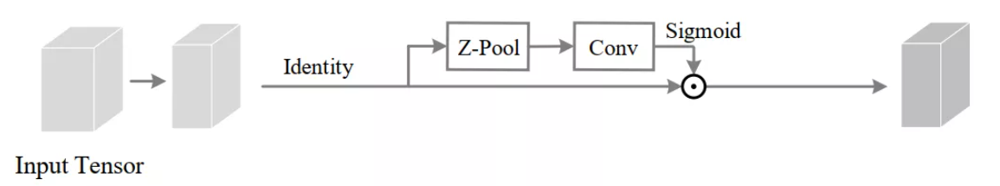
- 建立空间内部的交互
- 直接进行Z-pool得到（ 2×H×W ）
- 通过内核大小为k×k的标准卷积层，再通过批处理归一化层，得到 (1×H×W)
- 然后通过sigmoid来生成的注意力权值
- 综上所述，最终的输出y为
-
- 其中 代表卷积核大小为k的标准二维卷积层
- 进一步简化得到：
-
- 复杂度分析（Complexity Analysis）
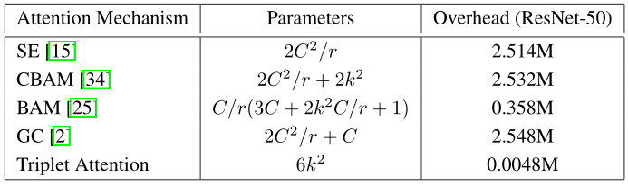
- C为该层的输入通道数，r为MLP在计算通道注意力时降维使用的缩减比，用于2D卷积的核大小用k表示，k<<<C。
Experiments
- 实验部分，作者证明其有效性和高效性，比较了性能和参数量水平
- ImageNet数据集上的分类实验
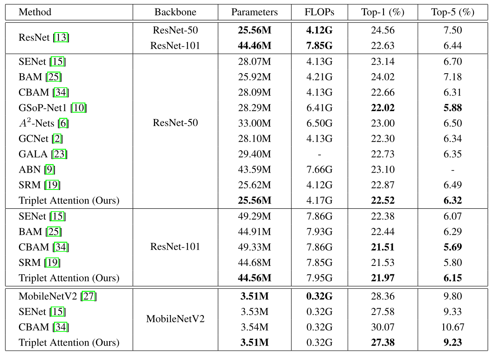
- Single-crop error rate (%) 单次剪裁错误率(%)，complexity comparisons in terms of network parameters (in millions) 网络参数(以百万计) and floating point operations per second (FLOPs)每秒浮点运算
- 目标检测实验
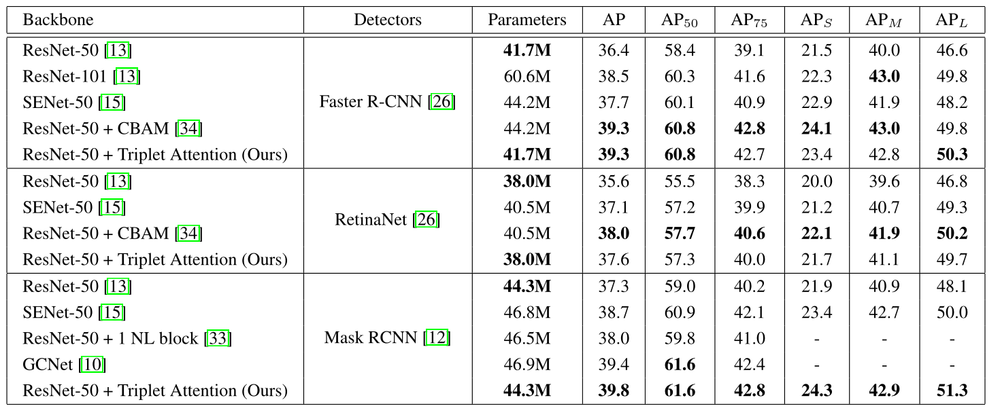
- Object detection mAP(%) on the MS COCO validation set
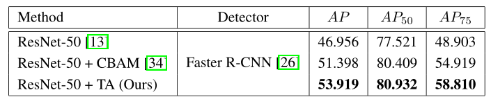
- Object detection mAP(%) on the PASCAL VOC 2012 test set
- 消融实验（Ablation Study on Branches）
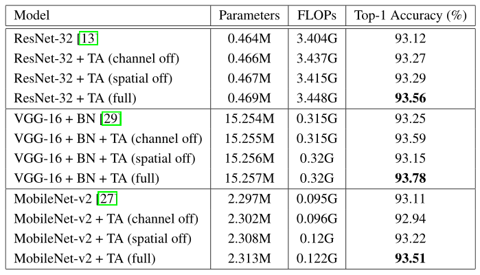
GINet: Graph Interaction Network for Scene Parsing
Introduction
-
作者提出了一种图形交互单元（GI unit）和语义上下文损失（SC-loss），利用语义上下文信息来促进基于图像区域的推理。图形交互单元能够增强卷积网络的特征表示，同时能自适应地为每个样本学习语义一致性
-
具体地，基于数据集的语义知识首先被纳入图交互单元来促进视觉图的上下文推理，然后演化的视觉图特征被反投影到每个局部特征来增强其可区分力。图交互单元进一步被语义上下文损失改善其生成基于样本语义图的能力。
-
上下文推理：
- 从特征图中学习图像的一种表示，图中的顶点定义像素簇(“区域”)，而边表示这些区域在特征空间中的相似性或关系
- 通过这种方法，可以在交互图空间中进行上下文推理，然后将演化后的图映射回原始空间，增强场景解析的局部表示。
-
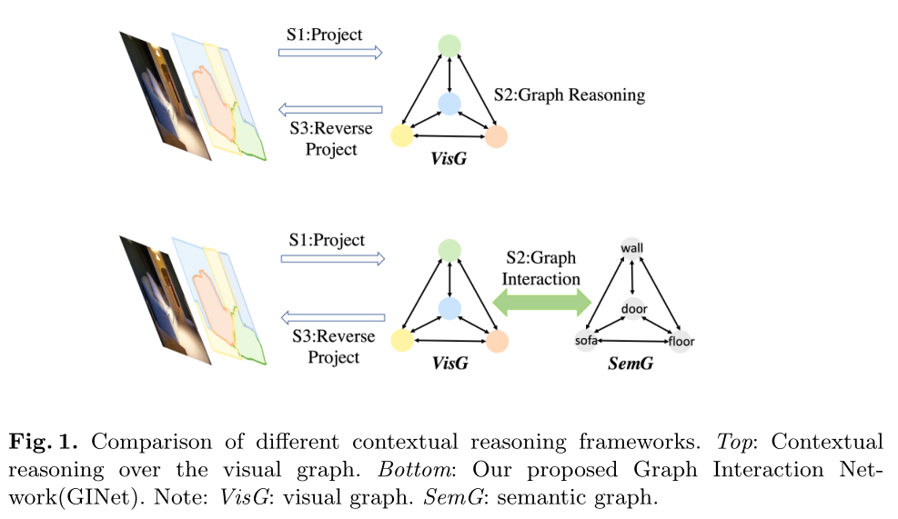
- 作者不仅仅是在输入图像（特征图）和图表示之间的推理（上面部分）
- 作者将语义信息（外部知识）与之进行关联，提出了图像交互单元（GI unit），将基于数据集的语言知识整合到视觉图的特征表示中，然后将视觉图的演化表示重新投影回每个位置表示中，以增强判别能力（下面部分）。为此作者也提出了一种语义上下文损失，让其更好自适应地表示样本（在场景中出现的类别被强调，而没有出现的类别被抑制）
-
论文地主要贡献：
- 提出了一种新的图形交互单元(GI单元)用于上下文建模，该单元融合了基于数据集的语言知识，可以促进可视化图形上的上下文推理。此外，它还学习了基于范例的语义图
- 提出了语义上下文丢失(SC-loss)来规范训练过程，它强调出现在场景中的类别，抑制没有出现在场景中的类别
-
场景解析的上下文建模根据是否考虑图推理，主要可分为两类
-
FCN
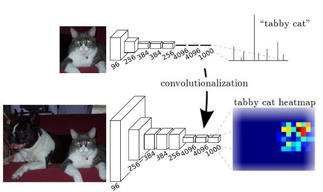
-
PSPNet利用多尺度信息，提出了金字塔池模块；DeepLab v2和DeepLab v3利用空洞卷积和空间金字塔池捕获上下文信息，该信息由不同扩张率的空洞卷积组成
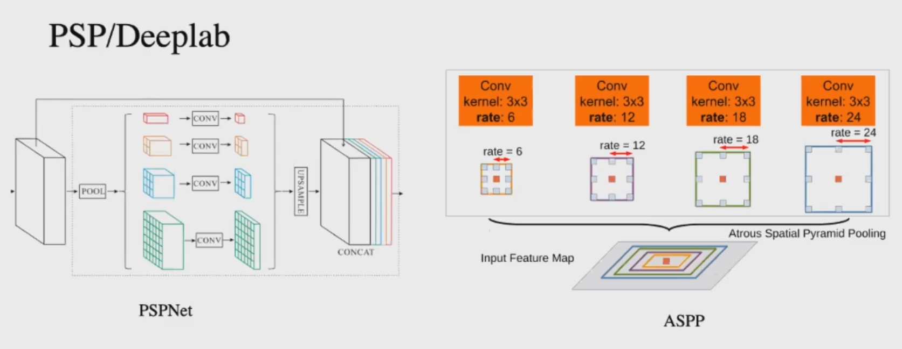
- 不过这种方法都是手工设置尺度参数，不能自适应的去学习，最好的方式就是每个像素都有它自己的独特的连接信息
-
使用Non-local非局部卷积的方式来获取全局的上下文信息，针对每一个像素，去计算和其他像素之间的依赖关系
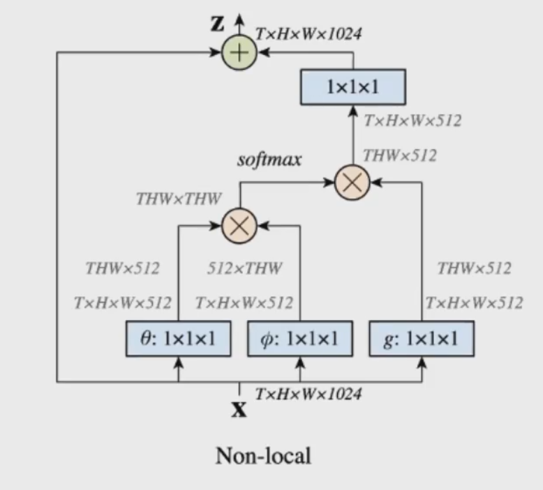
-
近期的一些工作会对Non-local进行精简，因为并不需要对所有的像素之间进行依赖关系计算
-
GCN用在语义分割中
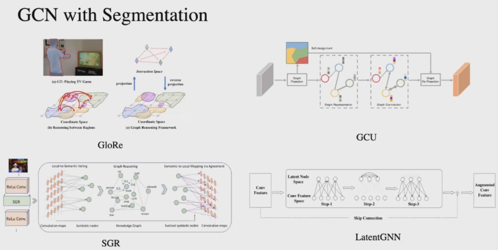
- 首先进行投射，从特征空间投射到图空间，然后对图空间进行GCN图推理，然后再反投射回特征空间
-
GINet
-
GI单元的目标是纳入基于数据集的语言信息，以促进局部表示
- GI单元以视觉和语义表示为输入，通过生成视觉图和语义图进行上下文推理
- 以视觉节点和语义节点的相似性为指导，在两个图之间进行图交互，演进节点特征
-
对于输入的二维图现象，GINet使用resnet作为主干网络提取特征信息
-
将基于数据集的语义知识以分类实体(类)的形式提取出来，并将分类实体(类)输入到 word embedding 单词嵌入 (如GloVe)中，实现语义表示
- word embedding，就是找到一个映射或者函数，生成在一个新的空间上的表达
- GloVe（ Global Vectors for Word Representation ）：进行词的向量化表示，使得向量之间尽可能多地蕴含语义和语法的信息
- 输入：语料库；输出：词向量
- 可以把一个单词表达成一个由实数组成的向量，这些向量捕捉到了单词之间一些语义特性，比如相似性（similarity）、类比性（analogy）等。我们通过对向量的运算，比如欧几里得距离或者cosine相似度，可以计算出两个单词之间的语义相似性
-
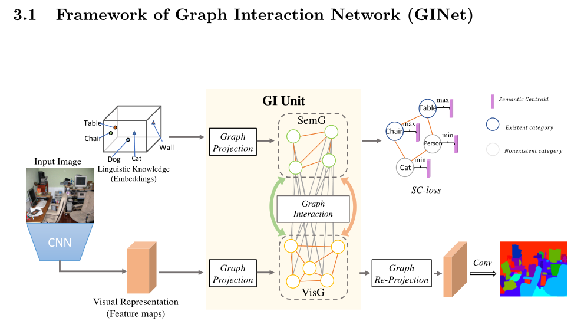
-
GI unit中通过图的投影（graph projection）操作传递视觉特征和语义嵌入表示，分别构造出两个图
-
GI unit的目标是纳入基于数据集的语言信息，以促进局部表示
-
GI unit以视觉表示和语义表示为输入，通过图的投影生成视觉图（visual graph）和语义图（semantic graph）进行上下文推理
- 视觉图（visual graph）
- 建立在视觉特征之上的，其中节点表示视觉区域，而边表示这些区域之间的相似性或关系
- 对于给定的视觉特征输入 ， 其中 ，期望构造一个视觉图表示，其中N是节点数目，D是每个节点的所期望的特征维数
- 作者引入了一个变换矩阵，从而通过X进而构造得到P
-
- 是一个可以训练矩阵，Z自适应将局部特征聚合到可视化图中的一个节点
- 语义图（semantic graph）
- 依赖于数据的类别上(用word embedding表示)，它表示了语言相关性和标签相关性
- 建立一个语义图表示，其中M表示节点的数量，等于数据集中分类实体(类)的数量，D为语义图中每个节点的特征维数
- 首先使用现成的词向量对每个类别得到语义表达 ，
- 然后，再使用两层MLP层对语言嵌入进行调整，使之适应视觉图的交互
- 代表每个类别的节点特征
- 视觉图（visual graph）
-
以视觉节点和语义节点的相似性为指导，在两个图之间进行图交互，推断节点特征
- Visual to Semantic (V2S)
- 同下
- 语义图中的信息从word embedding中抽取出来的时候是比较通用的，然后通过变换后的VisG的交互后，就变成了针对当前图片的一种语义表征。然后针对这些语义表征利用SC-loss去进一步约束每个有别的有无（可以有效的提高对小物体的识别能力）
- 同下，计算引导矩阵
- 得到引导矩阵侯，对SemG图进行更新，以生成基于范例的SemG
- Semantic to Visual (S2V)
- 首先对SemG进行图卷积，从而得到适合与VisG进行交互的图表示
- 是一个可学习的邻接矩阵或共现矩阵，表示语义相关或标签依赖之间的联系，过梯度下降随机初始化更新， 是单位矩阵， 是可训练矩阵参数，f 是非线性激活函数
- 因为邻接矩阵的对角都是0，和特征矩阵内积相当于将邻接矩阵做了加权和，节点特征的值成为了邻接矩阵的权，自身的特征被忽略。为避免这种情况，可以给A加上一个单位矩阵
- 利用变换得到的SemG来促进基于VisGeP的上下文推理
- 为了得到两个节点之间的关系，计算其特征相似度作为引导矩阵
- 对于来自 的一个节点 和来自SemG中的节点 ，我们可以计算 对节点 的赋权值的引导信息
- 其中 and 是可学习的权重矩阵用来降维；得到该引导矩阵后，可以从SemG中提取信息来增强VisG的表示
- 其中 是可学习的权重矩阵， 是初始化为零的可学习向量，可以通过一个标准梯度来更新
- 借助引导矩阵 ，有效地构建了视觉区域与语义概念之间的相关性，并将相应的语义特征纳入到视觉节点表示中
- Visual to Semantic (V2S)
-
-
在GI单元中进行图交互操作，其中语义图被用来促进视觉图的上下文推理，视觉图指导提取基于范例的语义图
-
Gi unit输出：基于范例的SemG；语义信息增强的VisG
-
重用投影矩阵Z来反向投影 得到二维像素特征
- 给定VisG中的节点 ，反投影：
- 是一个可训练矩阵， 是Z的转置矩阵，使用残差结构
-
将GI unit生成的交互后的视觉图通过图重投影操作来增强对每个局部可视化表示的识别能力，同时在训练阶段通过语义上下文丢失来更新和约束语义图
- 强调场景中出现的类别，抑制没有出现的类别，使GINet能够自适应地增强每个样本的外部语义知识，改进基于范例的SemG的生成
- 首先对每一个类定义一个可学习的语义中心 ，然后对于 中的每个语义节点 ，在 和 上通过一个简单的点积运算和sigmoid激活函数来计算分数 (0-1)，用BCE损失进行训练
- SC-loss使语义图中的节点特征与不存在类别的语义质心之间的相似性最小化，并使与存在类别之间的相似性最大化
-
- 其中 表示每个类别是否存在
- 在主干的Res4上添加了一个完整的卷积分割头来获得分割结果，于是GINet由SC-loss、辅助损失（auxiliary loss）和交叉熵损失组成
-
- 其中 和 都是超参数；与之前的方法相似，将辅助损失的超参数 设为0.4
-
最后使用一个1×1的Conv和一个简单的双线性上采样来获得解析结果
Experiments
- 消融实验
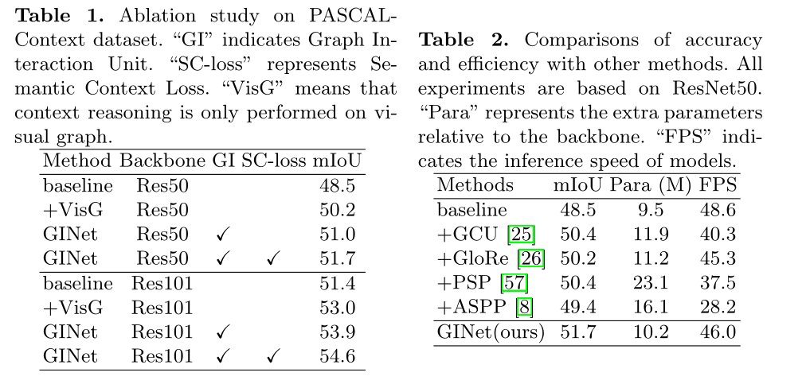
- 将GINet与基于VisG的上下文推理方法GCU、GloRe进行了比较
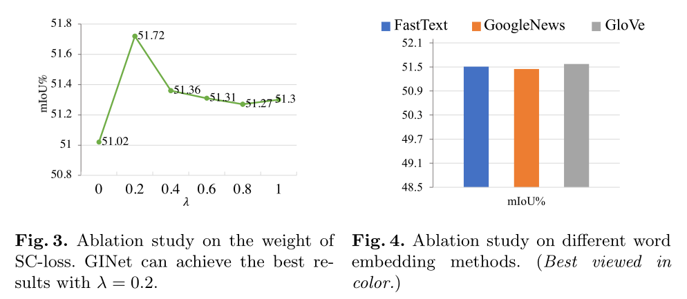
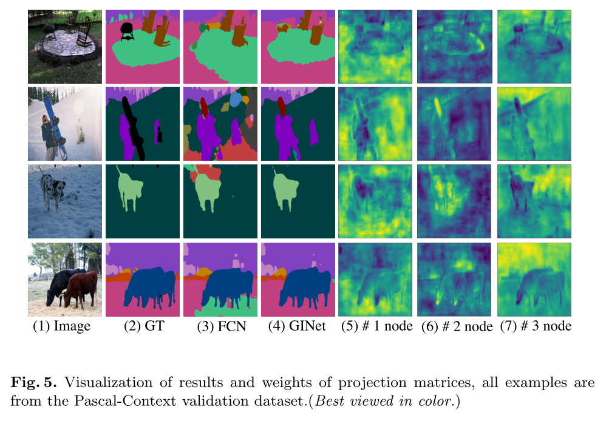
- 通过引入语义图来促进可视化图上的推理，GINet获得了更准确的解析结果
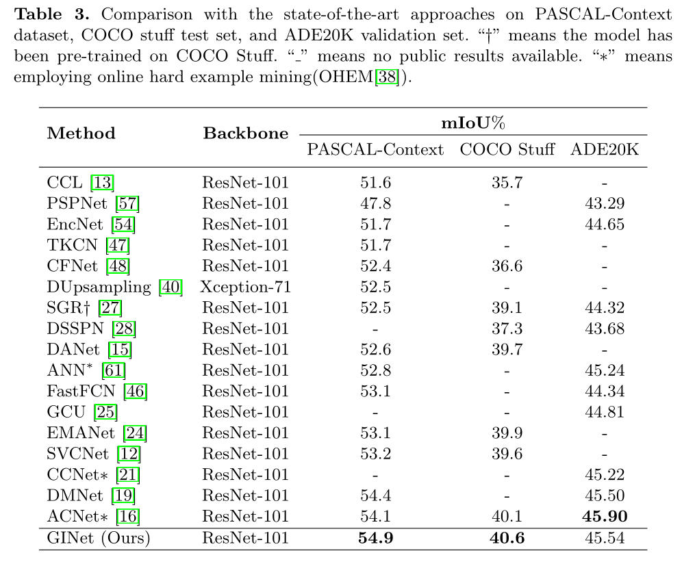